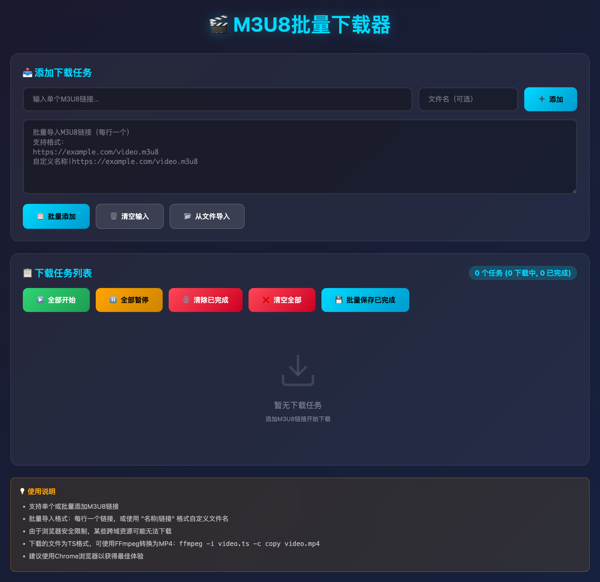
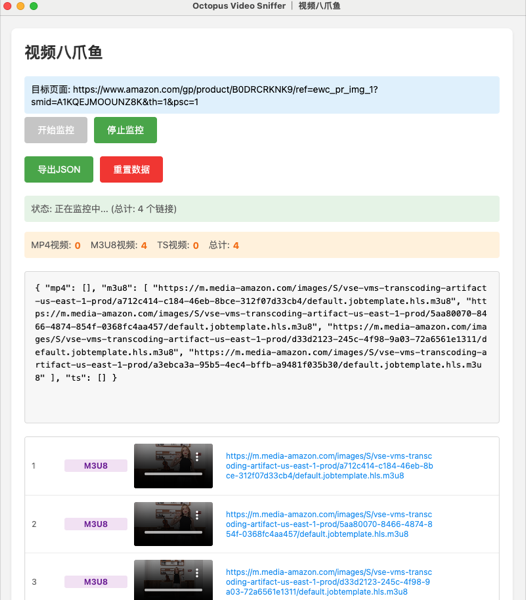
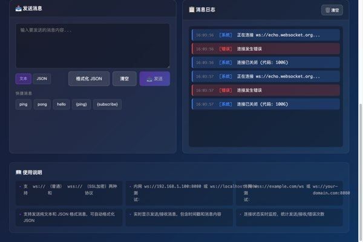
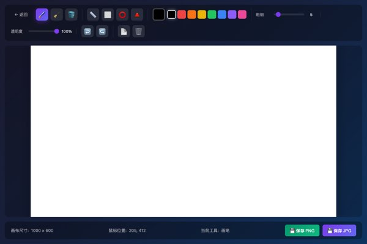
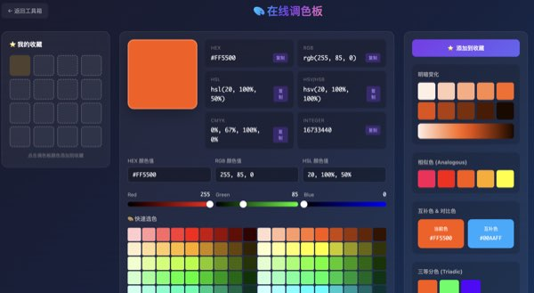
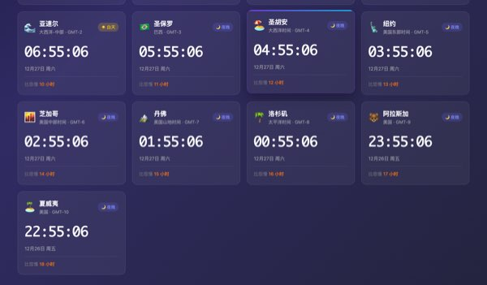
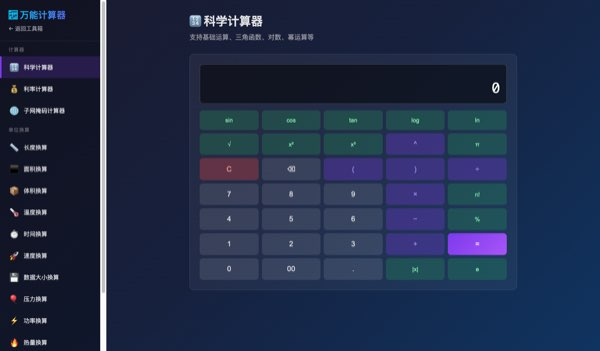
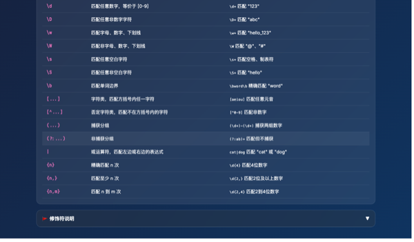
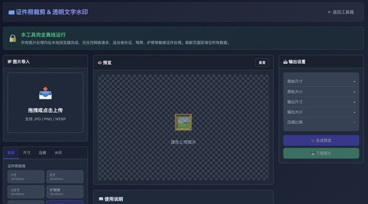
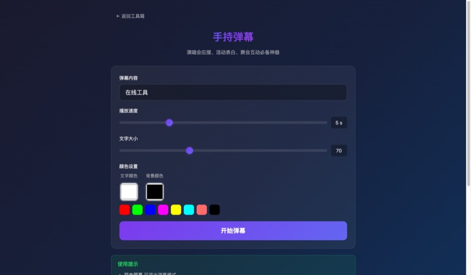

🛠️ Web Toolbox
一套纯前端的实用工具集，无需安装，浏览器直接打开即可使用
100% 前端 · 无需后端 · 开箱即用



OctoVideoSniffer 八爪鱼
Chrome/Edge 浏览器扩展，自动检测并提取网页中的视频链接
- 智能识别网页视频资源链接
- 支持 .m3u8 / .mp4 / .ts 等格式
- 简洁的界面，一键复制链接
- 轻量快速，开箱即用
加解密编码工具箱
集成 20+ 种加密解密和编码转换工具的综合工具箱
- MD5/SHA/AES/DES 等加密算法
- Base64/URL/Unicode 编码转换
- 摩尔斯电码/条形码生成器
- 密码生成/UUID/IP 转换等

WebSocket 测试工具
基于 HTML5 WebSocket 的在线调试工具，支持内网和外网
- 支持 ws:// 和 wss:// 协议
- 实时消息收发与日志显示
- 连接状态监控与统计
- 支持 JSON 格式化发送






证件照裁剪 & 透明水印
本地离线处理证件照：裁剪、改尺寸、压缩、添加透明文字水印
- 1寸/2寸/护照照等预设尺寸
- 自由裁剪与尺寸调整
- 透明文字水印（单点/平铺）
- 100%离线处理保护隐私



Claude Code 历史记录
查看和搜索 Claude Code 的历史对话记录，美观易用的可视化界面
- 支持 JSONL 格式导入
- 按项目/时间分组查看
- 全文搜索与内容筛选
- 导出为 Markdown/JSON/文本
在线图片编辑器
功能强大的在线P图工具，支持裁切、滤镜、调色、标注、抠图等
- 裁切/翻转/旋转变换
- 12种滤镜（灰度/浮雕/像素化等）
- 调色：亮度/对比度/饱和度/色调
- 标注绘图与纯色抠图